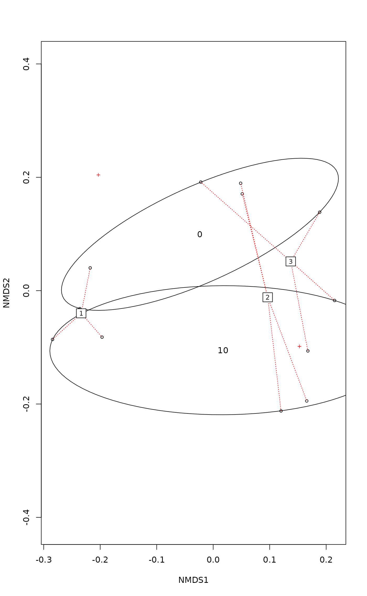

Permutational Multivariate Analysis of Variance Using Distance Matrices
adonis.RdAnalysis of variance using distance matrices — for partitioning distance matrices among sources of variation and fitting linear models (e.g., factors, polynomial regression) to distance matrices; uses a permutation test with pseudo-\(F\) ratios.
Usage
adonis2(formula, data, permutations = 999, method = "bray",
sqrt.dist = FALSE, add = FALSE, by = "terms",
parallel = getOption("mc.cores"), na.action = na.fail,
strata = NULL, ...)Arguments
- formula
Model formula. The left-hand side (LHS) of the formula must be either a community data matrix or a dissimilarity matrix, e.g., from
vegdistordist. If the LHS is a data matrix, functionvegdistwill be used to find the dissimilarities. The right-hand side (RHS) of the formula defines the independent variables. These can be continuous variables or factors, they can be transformed within the formula, and they can have interactions as in a typicalformula.- data
the data frame for the independent variables, with rows in the same order as the community data matrix or dissimilarity matrix named on the LHS of
formula.- permutations
a list of control values for the permutations as returned by the function
how, or the number of permutations required, or a permutation matrix where each row gives the permuted indices.- method
the name of any method used in
vegdistto calculate pairwise distances if the left hand side of theformulawas a data frame or a matrix.- sqrt.dist
Take square root of dissimilarities. This often euclidifies dissimilarities.
- add
Add a constant to the non-diagonal dissimilarities such that all eigenvalues are non-negative in the underlying Principal Co-ordinates Analysis (see
wcmdscalefor details). Choice"lingoes"(orTRUE) use the recommended method of Legendre & Anderson (1999: “method 1”) and"cailliez"uses their “method 2”.- by
by = "terms"will assess significance for each term (sequentially from first to last), settingby = "margin"will assess the marginal effects of the terms (each marginal term analysed in a model with all other variables),by = "onedf"will analyse one-degree-of-freedom contrasts sequentially,by = NULLwill assess the overall significance of all terms together. The arguments is passed on toanova.cca.- parallel
Number of parallel processes or a predefined socket cluster. With
parallel = 1uses ordinary, non-parallel processing. The parallel processing is done with parallel package.- na.action
Handling of missing values on the right-hand-side of the formula (see
na.failfor explanation and alternatives). Missing values are not allowed on the left-hand-side. NB, argumentsubsetis not implemented.- strata
Groups within which to constrain permutations. The traditional non-movable strata are set as Blocks in the permute package, but some more flexible alternatives may be more appropriate.
- ...
Other arguments passed to
vegdist.
Details
adonis2 is a function for the analysis and partitioning sums of
squares using dissimilarities. The function is based on the principles
of McArdle & Anderson (2001) and can perform sequential, marginal and
overall tests. The function also allows using additive constants or
squareroot of dissimilarities to avoid negative eigenvalues, but can
also handle semimetric indices (such as Bray-Curtis) that produce
negative eigenvalues. The adonis2 tests are identical to
anova.cca of dbrda. With Euclidean
distances, the tests are also identical to anova.cca of
rda.
The function partitions sums of squares of a multivariate data set,
and they are directly analogous to MANOVA (multivariate analysis of
variance). McArdle and Anderson (2001) and Anderson (2001) refer to
the method as “permutational MANOVA” (formerly
“nonparametric MANOVA”). Further, as the inputs are linear
predictors, and a response matrix of an arbitrary number of columns,
they are a robust alternative to both parametric MANOVA and to
ordination methods for describing how variation is attributed to
different experimental treatments or uncontrolled covariates. The
method is also analogous to distance-based redundancy analysis and
algorithmically similar to dbrda (Legendre and Anderson
1999), and provides an alternative to AMOVA (nested analysis of
molecular variance, Excoffier, Smouse, and Quattro, 1992; amova
in the ade4 package) for both crossed and nested factors.
Value
The function returns an anova.cca result object with a
new column for partial \(R^2\): This is the proportion
of sum of squares from the total, and in marginal models
(by = "margin") the \(R^2\) terms do not add up to
1.
Note
Anderson (2001, Fig. 4) warns that the method may confound
location and dispersion effects: significant differences may be caused
by different within-group variation (dispersion) instead of different
mean values of the groups (see Warton et al. 2012 for a general
analysis). However, it seems that adonis2 is less sensitive to
dispersion effects than some of its alternatives (anosim,
mrpp). Function betadisper is a sister
function to adonis2 to study the differences in dispersion
within the same geometric framework.
References
Anderson, M.J. 2001. A new method for non-parametric multivariate analysis of variance. Austral Ecology, 26: 32–46.
Excoffier, L., P.E. Smouse, and J.M. Quattro. 1992. Analysis of molecular variance inferred from metric distances among DNA haplotypes: Application to human mitochondrial DNA restriction data. Genetics, 131:479–491.
Legendre, P. and M.J. Anderson. 1999. Distance-based redundancy analysis: Testing multispecies responses in multifactorial ecological experiments. Ecological Monographs, 69:1–24.
McArdle, B.H. and M.J. Anderson. 2001. Fitting multivariate models to community data: A comment on distance-based redundancy analysis. Ecology, 82: 290–297.
Warton, D.I., Wright, T.W., Wang, Y. 2012. Distance-based multivariate analyses confound location and dispersion effects. Methods in Ecology and Evolution, 3, 89–101.
Examples
data(dune)
data(dune.env)
## default test by terms
adonis2(dune ~ Management*A1, data = dune.env)
#> Permutation test for adonis under reduced model
#> Terms added sequentially (first to last)
#> Permutation: free
#> Number of permutations: 999
#>
#> adonis2(formula = dune ~ Management * A1, data = dune.env)
#> Df SumOfSqs R2 F Pr(>F)
#> Management 3 1.4686 0.34161 3.2629 0.002 **
#> A1 1 0.4409 0.10256 2.9387 0.012 *
#> Management:A1 3 0.5892 0.13705 1.3090 0.217
#> Residual 12 1.8004 0.41878
#> Total 19 4.2990 1.00000
#> ---
#> Signif. codes: 0 ‘***’ 0.001 ‘**’ 0.01 ‘*’ 0.05 ‘.’ 0.1 ‘ ’ 1
## overall tests
adonis2(dune ~ Management*A1, data = dune.env, by = NULL)
#> Permutation test for adonis under reduced model
#> Permutation: free
#> Number of permutations: 999
#>
#> adonis2(formula = dune ~ Management * A1, data = dune.env, by = NULL)
#> Df SumOfSqs R2 F Pr(>F)
#> Model 7 2.4987 0.58122 2.3792 0.004 **
#> Residual 12 1.8004 0.41878
#> Total 19 4.2990 1.00000
#> ---
#> Signif. codes: 0 ‘***’ 0.001 ‘**’ 0.01 ‘*’ 0.05 ‘.’ 0.1 ‘ ’ 1
### Example of use with strata, for nested (e.g., block) designs.
dat <- expand.grid(rep=gl(2,1), NO3=factor(c(0,10)),field=gl(3,1) )
dat
#> rep NO3 field
#> 1 1 0 1
#> 2 2 0 1
#> 3 1 10 1
#> 4 2 10 1
#> 5 1 0 2
#> 6 2 0 2
#> 7 1 10 2
#> 8 2 10 2
#> 9 1 0 3
#> 10 2 0 3
#> 11 1 10 3
#> 12 2 10 3
Agropyron <- with(dat, as.numeric(field) + as.numeric(NO3)+2) +rnorm(12)/2
Schizachyrium <- with(dat, as.numeric(field) - as.numeric(NO3)+2) +rnorm(12)/2
total <- Agropyron + Schizachyrium
dotplot(total ~ NO3, dat, jitter.x=TRUE, groups=field,
type=c('p','a'), xlab="NO3", auto.key=list(columns=3, lines=TRUE) )

Y <- data.frame(Agropyron, Schizachyrium)
mod <- metaMDS(Y, trace = FALSE)
plot(mod)
### Ellipsoid hulls show treatment
with(dat, ordiellipse(mod, NO3, kind = "ehull", label = TRUE))
### Spider shows fields
with(dat, ordispider(mod, field, lty=3, col="red", label = TRUE))
 ### Incorrect (no strata)
adonis2(Y ~ NO3, data = dat, permutations = 199)
#> Permutation test for adonis under reduced model
#> Terms added sequentially (first to last)
#> Permutation: free
#> Number of permutations: 199
#>
#> adonis2(formula = Y ~ NO3, data = dat, permutations = 199)
#> Df SumOfSqs R2 F Pr(>F)
#> NO3 1 0.036688 0.24632 3.2682 0.06 .
#> Residual 10 0.112256 0.75368
#> Total 11 0.148944 1.00000
#> ---
#> Signif. codes: 0 ‘***’ 0.001 ‘**’ 0.01 ‘*’ 0.05 ‘.’ 0.1 ‘ ’ 1
## Correct with strata
with(dat, adonis2(Y ~ NO3, data = dat, permutations = 199, strata = field))
#> Permutation test for adonis under reduced model
#> Terms added sequentially (first to last)
#> Blocks: strata
#> Permutation: free
#> Number of permutations: 199
#>
#> adonis2(formula = Y ~ NO3, data = dat, permutations = 199, strata = field)
#> Df SumOfSqs R2 F Pr(>F)
#> NO3 1 0.036688 0.24632 3.2682 0.005 **
#> Residual 10 0.112256 0.75368
#> Total 11 0.148944 1.00000
#> ---
#> Signif. codes: 0 ‘***’ 0.001 ‘**’ 0.01 ‘*’ 0.05 ‘.’ 0.1 ‘ ’ 1
### Incorrect (no strata)
adonis2(Y ~ NO3, data = dat, permutations = 199)
#> Permutation test for adonis under reduced model
#> Terms added sequentially (first to last)
#> Permutation: free
#> Number of permutations: 199
#>
#> adonis2(formula = Y ~ NO3, data = dat, permutations = 199)
#> Df SumOfSqs R2 F Pr(>F)
#> NO3 1 0.036688 0.24632 3.2682 0.06 .
#> Residual 10 0.112256 0.75368
#> Total 11 0.148944 1.00000
#> ---
#> Signif. codes: 0 ‘***’ 0.001 ‘**’ 0.01 ‘*’ 0.05 ‘.’ 0.1 ‘ ’ 1
## Correct with strata
with(dat, adonis2(Y ~ NO3, data = dat, permutations = 199, strata = field))
#> Permutation test for adonis under reduced model
#> Terms added sequentially (first to last)
#> Blocks: strata
#> Permutation: free
#> Number of permutations: 199
#>
#> adonis2(formula = Y ~ NO3, data = dat, permutations = 199, strata = field)
#> Df SumOfSqs R2 F Pr(>F)
#> NO3 1 0.036688 0.24632 3.2682 0.005 **
#> Residual 10 0.112256 0.75368
#> Total 11 0.148944 1.00000
#> ---
#> Signif. codes: 0 ‘***’ 0.001 ‘**’ 0.01 ‘*’ 0.05 ‘.’ 0.1 ‘ ’ 1